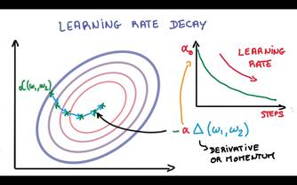

What are you minimizing = Cross-Entropy distance between the two vectors the softmax from the output layer and the expected one-hot encoding
Big picture (note no deep learning, just a simple NN). Take in the inputs X (matrix = size of samples * dimension or representation of each sample). Multiply by some linear model Weights * X + biases
Now take these scores (LOGITS) and covert them to probabilities using a softmax function
Bigger picture
Where again cross entropy is the difference between the actual (one-hot encoding) w.r.t. what the model is telling you. You want to essentially minimize this loss throughout your sample size.
How do you do it SCD Stochastic Gradient descent
1. Inputs => Mean = 0 & Equal Small variance
2. Initial weights => Random, mean = 0, Equal Small variance
3. Momentum i.e. keep history of the past and then move accordingly.
4. Learning rate slowly reduce it.
5. 
Final few pointers. Adagrad takes care of the first 3 but nothing beats hand tuned optimization.
Turn the logistic regression example with SGD into a 1-hidden layer neural network with rectified linear units (nn.relu()) and 1024 hidden nodes. This model should improve your validation / test accuracy.
Note: Depicted above is
a "2-layer" neural network:
1.
The first layer effectively consists of the set of weights and
biases applied to X and passed through ReLUs. The
output of this layer is fed to the next one, but is not observable outside the
network, hence it is known as a hidden layer.
2. The second layer
consists of the weights and biases applied to these intermediate outputs,
followed by the softmax function to generate
probabilities.
Now, lets look at the actual code + explanation for tensorflow.
//Turn the logistic
regression example with SGD into a 1-hidden layer neural network with rectified
linear units (nn.relu()) and
1024 hidden nodes. This model should improve your validation / test accuracy.
##START same as before
batch_size = 128
graph = tf.Graph()
##Now you create the structure in tensorflow, its a graph (generic structure)
with graph.as_default(): ##similar to using in c#,
get the default graph. SO there can be more than one graph
#
Input data. For the training data, we use a placeholder that will be fed
# at run
time with a training minibatch.
tf_train_dataset
= tf.placeholder(tf.float32, shape=(batch_size, image_size * image_size))
tf_train_labels
= tf.placeholder(tf.float32,
shape=(batch_size, num_labels))
#notice
two kind of variables, constant thats already bound and placeholder that
will be bound
tf_valid_dataset
= tf.constant(valid_dataset)
tf_test_dataset
= tf.constant(test_dataset)
##END same
as before
## START creation
of new hidden layer
#
new hidden layer, this is another HYPERPARAMETER
that can be tuned.
hidden_nodes
= 1024
##
NOTE:: instead of num_lables
you have this as 784*1024. And then later the weigths
is 1024 * 10. Earlier, the weigths we 784 * 10
## When you train a model, you use variables
to hold and update parameters. Variables are in-memory buffers containing tensors.
They must be explicitly
initialized and can be saved to disk during and after training. You can
later restore saved values to exercise or analyse the
model.
The
difference is that with tf.Variable you have
to provide an initial value when you declare it. With tf.placeholder you don't
have to provide an initial value and you can specify it at run time with the feed_dict argument
inside Session.run
hidden_weights
= tf.Variable(tf.truncated_normal([image_size *
image_size, hidden_nodes])
)
hidden_biases
= tf.Variable( tf.zeros([hidden_nodes]))
hidden_layer
= tf.nn.relu( tf.matmul( tf_train_dataset, hidden_weights)
+ hidden_biases)
#
Variables.
weights = tf.Variable( tf.truncated_normal([hidden_nodes, num_labels]))
biases = tf.Variable(tf.zeros([num_labels]))
## END creation
of new hidden layer
# Training
computation.
logits = tf.matmul(hidden_layer,
weights) + biases
## what is
numpy axis --
http://www.sam.math.ethz.ch/~raoulb/teaching/PythonTutorial/intro_numpy.html
##
example: 0 = rows, 1 = columns for 2 dimensional matrix.
## what
does reduce mean do: http://stackoverflow.com/questions/34236252/difference-between-np-mean-and-tf-reduce-mean-numpy-tensorflow
## reduce
mean = average mean across the axis or dimensions of the entire batch size.
loss = tf.reduce_mean( tf.nn.softmax_cross_entropy_with_logits(logits,
tf_train_labels) )
##maybe a
better name for loss would be average_loss???
#
Optimizer.
# 0.5 =
learning rate
optimizer = tf.train.GradientDescentOptimizer(0.5).minimize(loss)
#
Predictions for the training, validation, and test data.
train_prediction
= tf.nn.softmax(logits)
valid_relu
= tf.nn.relu( tf.matmul(tf_valid_dataset, hidden_weights)
+ hidden_biases)
valid_prediction
= tf.nn.softmax( tf.matmul(valid_relu, weights) +
biases)
test_relu
= tf.nn.relu( tf.matmul( tf_test_dataset, hidden_weights) + hidden_biases)
test_prediction
= tf.nn.softmax(tf.matmul(test_relu, weights) +
biases)
### same as before....
num_steps = 3001
with tf.Session(graph=graph)
as session:
tf.initialize_all_variables().run()
print("Initialized
all variables. ONLY do it ONCE for the session.")
for step in range(num_steps):
# Pick
an offset within the training data, which has been randomized.
# Note:
we could use better randomization across epochs.
offset = (step * batch_size) % (train_labels.shape[0]
- batch_size)
#
Generate a minibatch.
batch_data
= train_dataset[offset:(offset + batch_size), :]
batch_labels
= train_labels[offset:(offset + batch_size), :]
#
Prepare a dictionary telling the session where to feed the minibatch.
# The
key of the dictionary is the placeholder node of the graph to be fed,
# and
the value is the numpy array to feed to it.
#
PLACEHOLDER bound to actual values in RUNTIME
feed_dict
= {tf_train_dataset : batch_data, tf_train_labels
: batch_labels}
_, l, predictions = session.run(
[optimizer, loss, train_prediction], feed_dict=feed_dict)
if (step % 500 == 0):
print("Minibatch loss at step %d: %f" % (step, l))
print("Minibatch accuracy: %.1f%%" % accuracy(predictions, batch_labels))
print("Validation
accuracy: %.1f%%" % accuracy(
valid_prediction.eval(), valid_labels))
print("Test accuracy:
%.1f%%" % accuracy(test_prediction.eval(), test_labels))